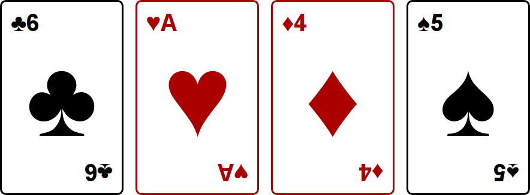
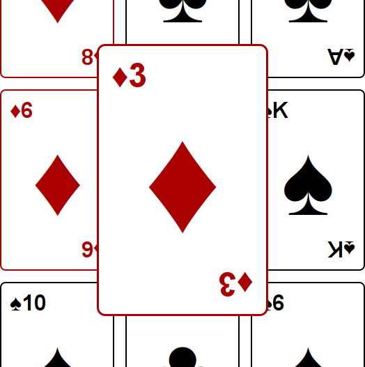
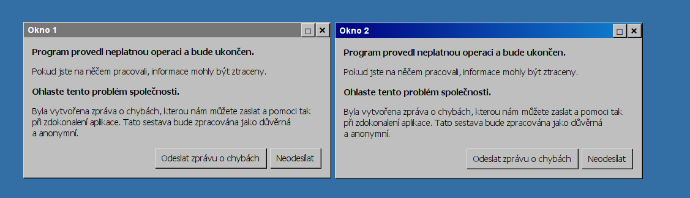
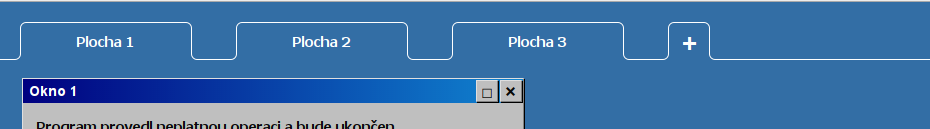

Úlohy můžete řešit v libovolném
pořadí a samozřejmě je nemusíte vyřešit všechny. Počet bodů za každou úlohu
je uveden přímo v jejím zadání. Hodnotí se shoda se zadáním,
funkčnost, dodržování webových standardů a přehlednost zdrojového
kódu.
Na řešení úloh máte 4 hodiny čistého
času.
Před zahájením soutěže vám pořadatel
oznámí, kde najdete testovací soubory a kam máte ukládat řešení
úloh. Kompletní řešení každé úlohy (soubory HTML, CSS, obrázky,
případně Javascript) uložte do samostatného podadresáře nazvaného
jménem úlohy (např.
karty). Stránku s řešením vždy pojmenujte
index.html a
uložte v kódování UTF-8.
Při zápisu HTML a CSS kódu dodržujte
webové standardy. Součást hodnocení vašich řešení je i kontrola
zdrojových kódů pomocí validátorů. Doporučujeme používat HTML5,
ale můžete použít i starší verze – HTML4 nebo XHTML1.
Při řešení je povoleno používat
knihovnu jQuery bez pluginů. Další obdobné frameworky pouze po
schválení porotou.
Karty
max. 10 bodů
Vytvořte stránku, na které se zobrazí karty podobně jako na obrázku:

Každá karta je 320 px vysoká a 200 px široká. Mezi kartami jsou viditelné rozestupy,
stejně tak od okrajů stránky. Velikost písma přibližně odpovídá obrázku.
Symboly na kartách jsou unicodové znaky:
| ♠: U+2660 |
♣: U+2663 |
♥: U+2665 |
♦: U+2666 |
Pro připomenutí, karty mohou nabývat hodnot A, 2, 3, 4, 5, 6, 7, 8, 9,
10, J, Q nebo K.
Karty jsou dvouhlavé, tedy text vespod je vzhůru nohama. Srdce a káry
jsou červené, piky a kříže černé. Nemusíte zachovat hodnoty jako na
obrázku, ale musíte použít všechny čtyři symboly.
Celkem bude zobrazeno deset karet. Karty mají pevnou velikost, a na
šířku je jich maximum kolik se vejde do okna prohlížeče. Při změně
velikosti okna by se měly přeskládat.
Pokud na kartu najedete myší, zvětší se přibližně o půlku, tedy na 300
px šířky. Všechny elementy na kartě se proporčně zvětší a zůstanou na
správných místech vzhledem ke zvětšené kartě. Jakmile myší kartu opustíte,
vrátí se do původní velikosti.

Zvětšená karta musí překrývat okolní karty a žádné jiné karty se nesmějí
pohnout.
Bonusové body dostanete, pokud bude zvětšování plynulé (animované),
u každé karty nezávislé na ostatních.
Na stránku viditelně umístěte tlačítko s textem "zamíchat". Po jeho
stisknutí zobrazené karty zmizí, a místo nich se najednou objeví deset
jiných, jejichž hodnoty a symboly budou zvolené náhodně. Karty se mohou
opakovat.
Vedle tlačítka umístěte textové políčko s počátečním textem "10". Při
kliknutí na tlačítko zamíchat se objeví tolik karet, kolik je napsáno
v tomto políčku. Pokud není zadáno číslo větší než nula, neobjeví se žádné
karty.
Okna
max. 30 bodů
Dnešní prohlížeče mají schopnosti, o kterých se mohlo
programátorům před lety jen zdát. Nevěříte?
Zkusíte si v prohlížeči vytvořit Windows 98. V celé úloze
nesmíte používat obrázky, v opačném případě nedostanete žádné body.
Základní okna
Stránka bude mít modré pozadí. Na ní budou zobrazena dvě okna s obsahem jako na obrázku:

Dbejte na to, aby se okna takto zobrazila v každém prohlížeči na každém
operačním systému – nespoléhejte na to, že systémová tlačítka mají právě tento
vzhled. 3D efektu tlačítek a oken docílíte tak, že na levém a horním okraji
bude barva světlejší, zatímco na pravém a dolním bude tmavší. Všechna tlačítka
lze viditelně stisknout a chovají se podobně jako systémová tlačítka.
Aktivní okno se od neaktivního odliší pomocí horního pruhu. Aktivní okno má
pruh s přechodem od tmavé ke světlé modré. Kliknutím kamkoli do okna
lze okna přepnout.
Tlačítkem „Odeslat zprávu o chybách“ se vyvolá lokální
e-mailový klient, s adresou příjemce <soutez@example.com>.
Kliknutím na tlačítko se čtverečkem se okno maximalizuje. Takové
okno zabírá celou plochu. Opětovným kliknutím na tlačítko se
čtverečkem se okno vrátí do původního tvaru.
Plochy
Lidem, co na počítači pracují, nemůže jedna plocha stačit.
Proto přidejte záložky:

Dnes
už je důležité, aby byl operační systém krásný. Záložky by
měly mít všechny hrany zaoblené jako na obrázku. Pamatujte, že nesmíte používat obrázky.
Oživení
Kliknutím na křížek nebo tlačítko „neodesílat“ se okno
zavře. Abyste lépe poznali atmosféru dob minulých, při zavření
libovolného okna se dvě nová otevřou.
Když se otevře nové okno, objeví se na nějakém místě na
obrazovce tak, aby v případě, že se jich objeví více najednou, se
vzájemně nepřekrývala. Můžete se inspirovat svým operačním
systémem. Nová okna udržují číslování (Okno 1, Okno 2, Okno
3, …)
Okno s chybovou hláškou se také otevře, pokud nešťastně dvojkliknete na
plochu. V takovém případě se otevře na místě, kde jste dvojklikli.
Za horní pruh jde okno chytit a přesouvat. Pokud se dvě nebo více
oken překrývá, nahoře je to, které jste používali nejpozději.

Okno
lze částečně vysunout z obrazovky. Monitor ale nezvětšíte,
proto by se nemělo nic stát ani s prohlížečem. Plocha by také
neměla mít posuvníky.
Aktivní může být jen jedna plocha, jejíž záložka je vizuálně
odlišená. Vhodný způsob vizuálního odlišení sami zvolte (ukázkový
obrázek jej neobsahuje). Klikáním na záložky se přepínají plochy –
každé okno je právě na jedné.
Kliknutím na záložku „+“ se přidá další plocha.